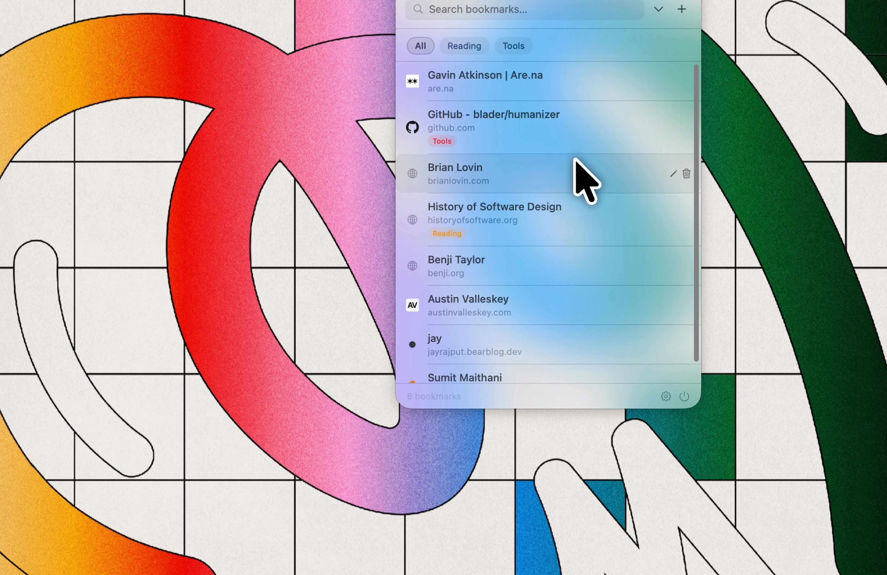

The bookmark manager that doesn't want your email.
You probably have hundreds of bookmarks across two browsers and one abandoned Notion page. Finding the right one is the hard part. Tabby fixes that with a menu bar app, one keyboard shortcut, and a local file on your Mac.
Download for macOS
Bookmarks rot in folders. You save something to "Read Later" and never see it again. Browser bookmark bars run out of space fast. Most bookmark apps charge you every month to sync data that could live in a tiny file.
Tabby does less on purpose. Hit ⌘⇧L, paste a link, move on. Hit ⌘⇧L later, and it is right there.
Bookmark apps are temporary. They get bought, shut down, or reinvented into something you did not ask for.
Your links should not depend on that. Tabby keeps everything in plain JSON. Open it in TextEdit. Grep it. Email it to yourself. Import it somewhere else years from now.
If Tabby disappears, your bookmarks do not.
That should be normal.
Tabby is for people who save links and forget where they put them. People who want a bookmark manager that feels like software from before every app needed an account.
You get tags, full-text search, and exports. If you want shared folders, AI summaries, and reading analytics, other apps already do that.
Download. Drag to Applications. Open. If macOS says it cannot verify the app, go to System Settings → Privacy & Security, scroll to the Security section, and click Open Anyway. Then launch Tabby again. The icon appears in your menu bar and setup is done in seconds.
No signup. No onboarding tour. No "personalize your experience." Tabby opens, asks for nothing, and gets out of your way.
To uninstall, drag Tabby to the Trash. Your data stays in ~/Library/Application Support/Tabby until you remove it yourself.